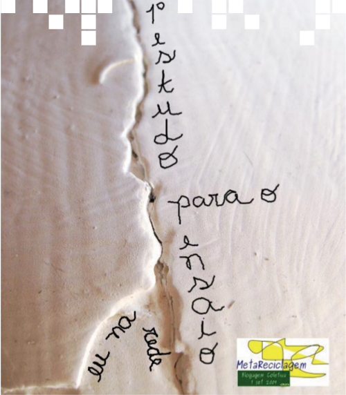
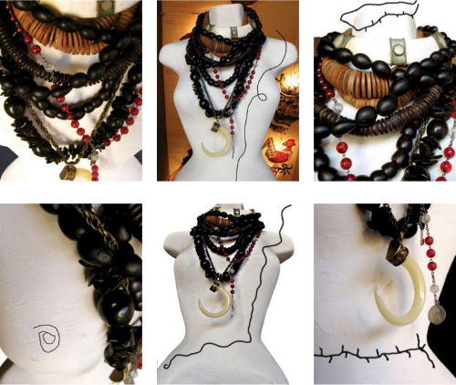
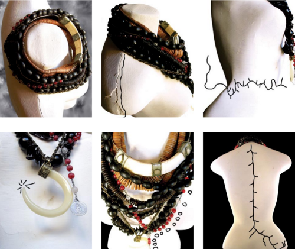

eu na rede
/teia camargo
Original em http://rede.metareciclagem.org/blog/07-09-09/eu-na-rede
Esse é meu primeiro estudo para o Ensaio “eu na rede”. Uma série de fragmentos fotográficos. Partes de mim que estão impregnadas das marcas_sensações_atitudes_pensamentos_e tudo o mais que compõe minha caminhada metarecicleira que começou há milênios. venho, desde então, tentando organizar essas provocações filosóficas num trabalho midiático que perfaz meu caminho e se cruza necessariamente com tantos outros.

Coincidentemente, neste dia da In(ter)dependência da MetaReciclagem, recebi um telefonema pra visitar o espaço onde comecei uma série de atividades que me trouxeram à rede MetaReciclagem. em 2006, iniciava um trabalho de alfabetização de adultos num quintal muito cheiroso: jabuticabeiras, mangueiras, um galinheiro esquecido se transformava numa aconchegante salinha de computadores. parte dos reacessos, talvez como o orlando tá investigando profundamente. esse primeiro ensaio fotográfico foi feito para e com a Metareciclagem, e deverá se transformar numa instalação-performance com gambiarras interativas.

